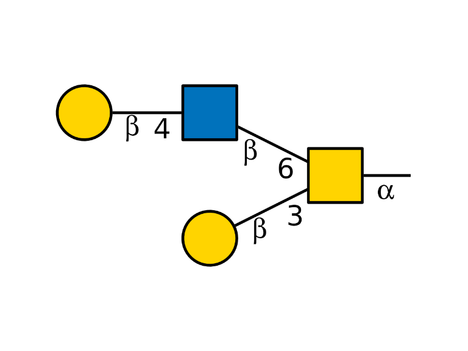
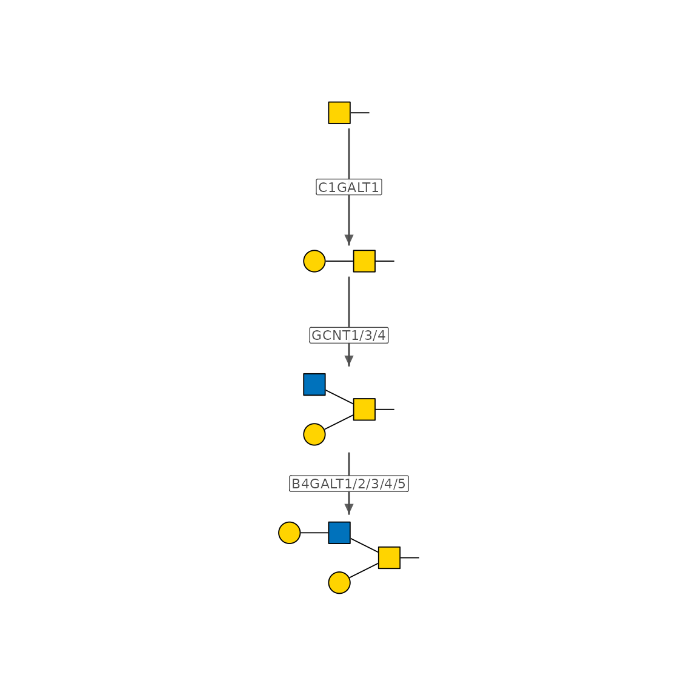
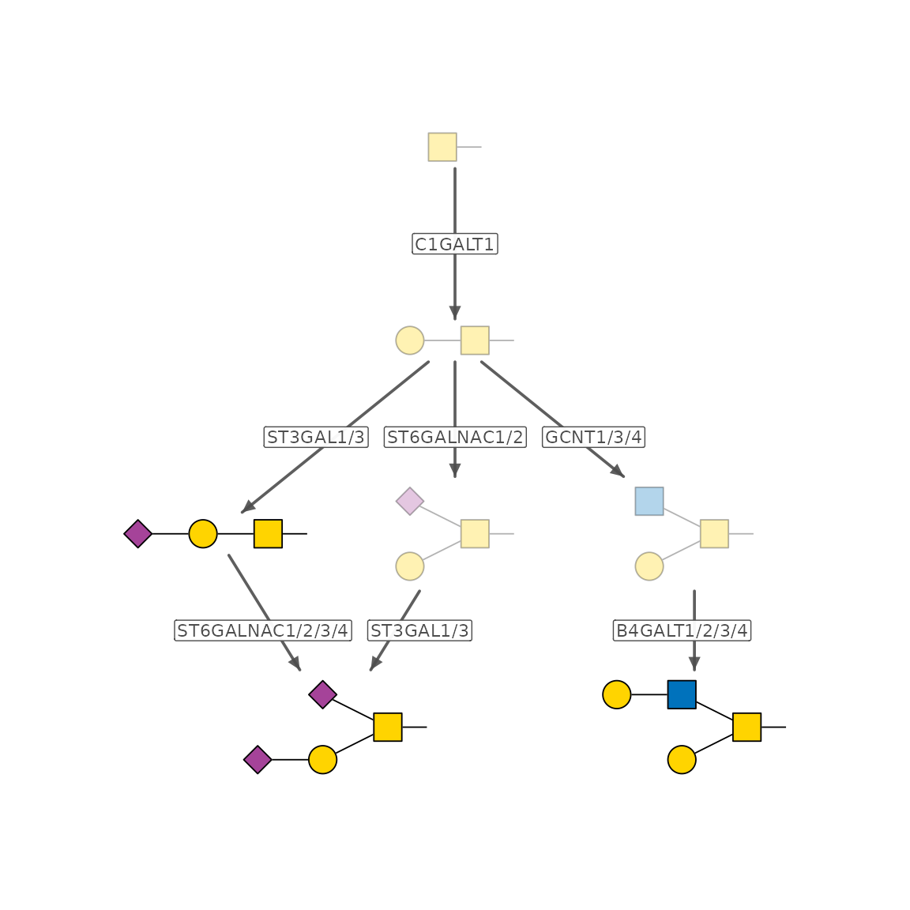
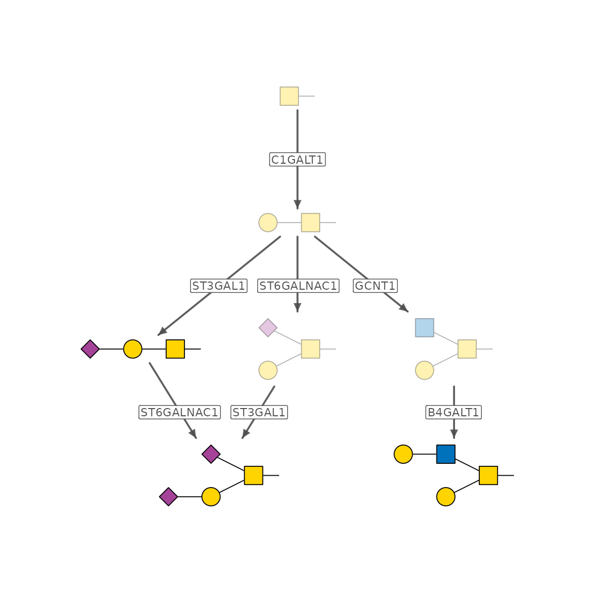
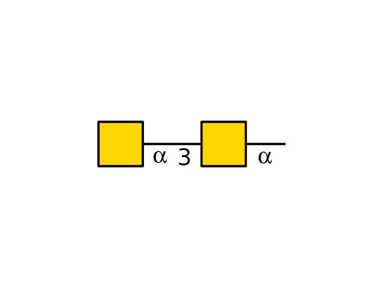
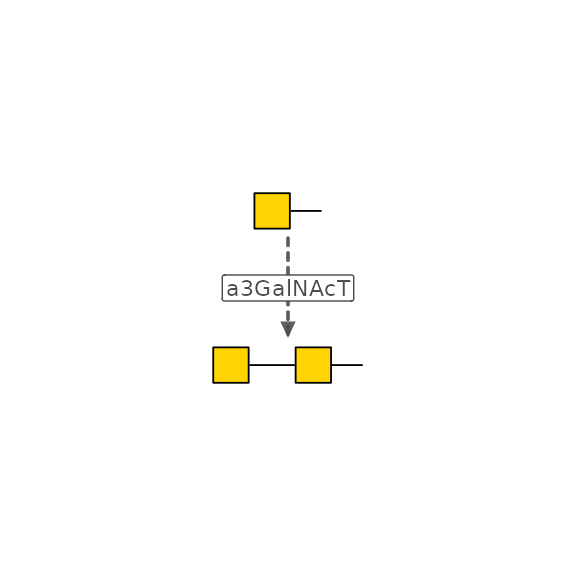
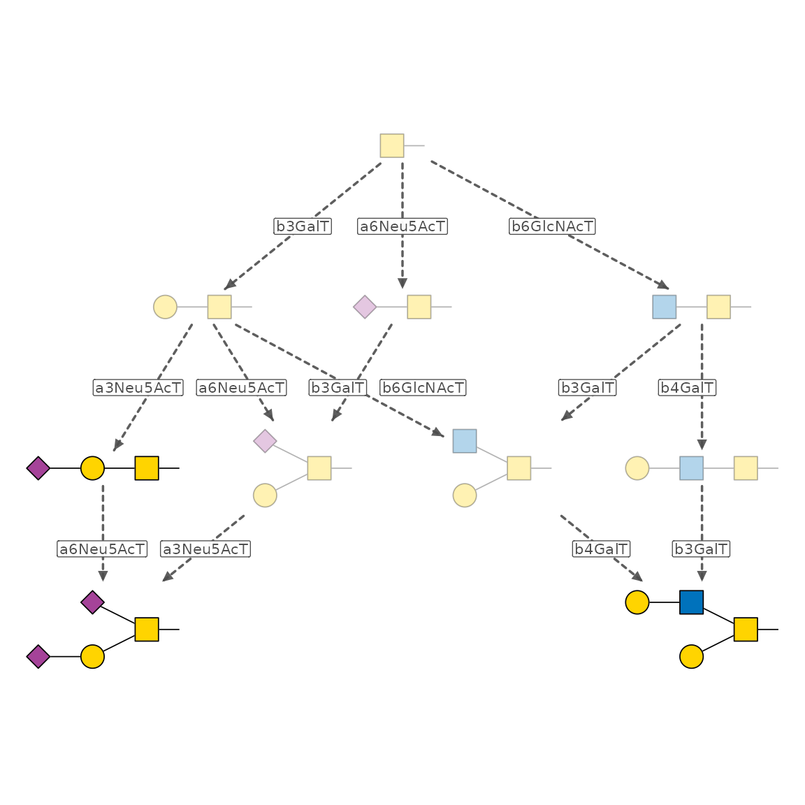
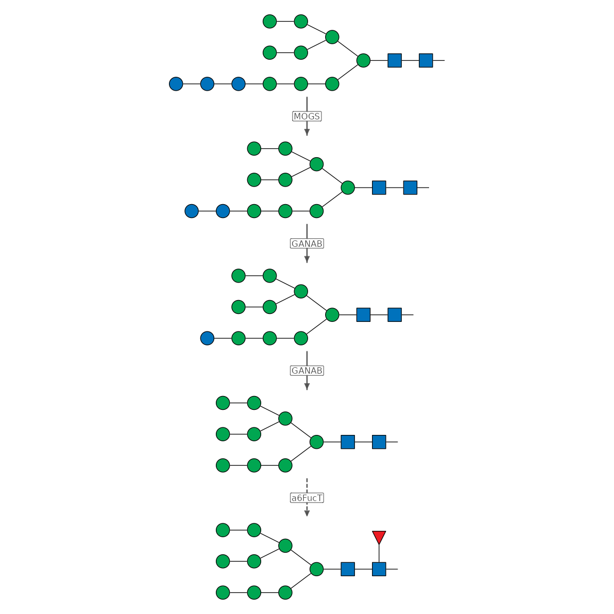

Glycan Biosynthesis Network
biosynthesis-network.RmdIn Get
Started with glyenzy, we briefly discussed using
trace_biosynthesis() to build glycan biosynthesis networks.
Here, we take a closer look at the process and introduce the concept of
a “virtual enzyme.”
trace_biosynthesis()
Let’s start with the O-GalNAc glycan we met earlier:
glycan <- "Gal(b1-4)GlcNAc(b1-6)[Gal(b1-3)]GalNAc(a1-"
draw_cartoon(glycan)
To build its biosynthesis network, call
trace_biosynthesis():
path <- trace_biosynthesis(glycan)
path
#> IGRAPH 223eded DN-- 4 8 --
#> + attr: name (v/c), target (v/l), enzyme (e/c), step (e/n)
#> + edges from 223eded (vertex names):
#> [1] GalNAc(a1- ->Gal(b1-3)GalNAc(a1-
#> [2] Gal(b1-3)GalNAc(a1- ->Gal(b1-3)[GlcNAc(b1-6)]GalNAc(a1-
#> [3] Gal(b1-3)GalNAc(a1- ->Gal(b1-3)[GlcNAc(b1-6)]GalNAc(a1-
#> [4] Gal(b1-3)GalNAc(a1- ->Gal(b1-3)[GlcNAc(b1-6)]GalNAc(a1-
#> [5] Gal(b1-3)[GlcNAc(b1-6)]GalNAc(a1-->Gal(b1-4)GlcNAc(b1-6)[Gal(b1-3)]GalNAc(a1-
#> [6] Gal(b1-3)[GlcNAc(b1-6)]GalNAc(a1-->Gal(b1-4)GlcNAc(b1-6)[Gal(b1-3)]GalNAc(a1-
#> [7] Gal(b1-3)[GlcNAc(b1-6)]GalNAc(a1-->Gal(b1-4)GlcNAc(b1-6)[Gal(b1-3)]GalNAc(a1-
#> + ... omitted several edgespath is an igraph object representing the
biosynthesis network. It contains the following attributes:
-
name: node attribute, character, IUPAC-condensed sequences of glycan structures -
enzyme: edge attribute, character, gene symbol of the enzymes involved in the enzymatic step -
step: edge attribute, integer, the rank of the enzymatic step
An enzymatic step can often be catalyzed by more than one enzyme. This results in multiple edges between two nodes, with each edge representing an enzyme. Therefore, the resulting network is a multi-edge network.
You can visualize the network with plot(). For a simpler
visualization, the multi-edge network is reduced to a single-edge
network when it is plotted.
plot(path)
trace_biosynthesis() also accepts a vector of glycan
structures. When you provide multiple glycans, it infers a union
biosynthesis network that reaches each structure.
glycans <- c(
"Neu5Ac(a2-3)Gal(b1-3)GalNAc(a1-",
"Neu5Ac(a2-3)Gal(b1-3)[Neu5Ac(a2-6)]GalNAc(a1-",
"Gal(b1-3)[Gal(b1-4)GlcNAc(b1-6)]GalNAc(a1-"
)
path <- trace_biosynthesis(glycans)
plot(path)
Note that “Neu5Ac(a2-3)Gal(b1-3)GalNAc(a1-” is both a target glycan and an intermediate glycan.
Now let’s look at the arguments. enzymes accepts a
character vector of enzyme gene symbols. By default,
enzymes = NULL, so all enzymes are used. You can use this
argument to restrict your searching space.
enzymes <- c("C1GALT1", "ST3GAL1", "ST6GALNAC1", "GCNT1", "B4GALT1")
path <- trace_biosynthesis(glycans, enzymes)
plot(path)
The other two arguments, max_steps and
filter, may be less commonly used. They let you place
additional restrictions on the network inference algorithm. See the
function documentation for details.
We’ll return to max_virtual_steps later.
trace_biosynthesis_virtual()
trace_biosynthesis() is based on existing knowledge of
glycan biosynthesis. However, many glycan structures can be detected
even when their biosynthesis routes remain unknown. One typical example
is the O-GalNAc core 5.
glycan <- "GalNAc(a1-3)GalNAc(a1-"
draw_cartoon(glycan)
The exact enzyme responsible for adding the second GalNAc is still uncertain. As a result, trying to infer the biosynthesis network for this simple glycan raises an error.
try(trace_biosynthesis(glycan))
#> Error in .prefilter_enzymes(enzymes, glycans, apply_prefilter) :
#> No enzymes are predicted to contribute to any target glycan.Sometimes, though, the concrete enzymes matter less than the possible
biosynthesis routes. In that case,
trace_biosynthesis_virtual() can help. This function works
in an enzyme-agnostic way, building a biosynthesis network with “virtual
enzymes.”
path <- trace_biosynthesis_virtual(glycan)
plot(path, width = 3, height = 3)
Here, “a3GalNAcT” is not a concrete enzyme, but a “virtual enzyme”
assigned to this enzymatic step. In this way,
trace_biosynthesis_virtual() can infer a biosynthesis
network for any glycan structure. Let’s try it on the three O-GalNAc
glycans we saw earlier.
path <- trace_biosynthesis_virtual(glycans)
plot(path)
Compared with the result from trace_biosynthesis(), some
new edges appear. These represent possible, but non-canonical, enzymatic
steps.
Hybrid methods
These two methods are not mutually exclusive. Both functions provide ways to incorporate the other approach.
For trace_biosynthesis(), there is a
max_virtual_steps argument. When a residue cannot be
assigned to a known enzyme, trace_biosynthesis() can assign
it to a virtual enzyme using the same technique as
trace_biosynthesis_virtual().
For example, canonical FUT8 reactions require a b2 GlcNAc added by
MGAT1. This prevents high-mannose N-glycans being core-fucosylated.
Therefore, calling trace_biosynthesis() on these glycans
raises an error.
glycan <- "Man(a1-2)Man(a1-2)Man(a1-3)[Man(a1-2)Man(a1-3)[Man(a1-2)Man(a1-6)]Man(a1-6)]Man(b1-4)GlcNAc(b1-4)[Fuc(a1-6)]GlcNAc(b1-"
try(trace_biosynthesis(glycan))
#> Error in engine$run() :
#> No synthesis path found for 1 target(s) within 16 steps.max_virtual_steps defines the maximum number of
target-directed virtual enzyme steps allowed when no fully enzymatic
path exists. Setting it to 1L makes it possible to trace
the biosynthesis network for this glycan.
path <- trace_biosynthesis(glycan, max_virtual_steps = 1L)
plot(path)
Although core fucosylation may occur on any intermediate glycan structure, the algorithm defers it as much as possible to avoid over-inference.
trace_biosynthesis_virtual() also has an
annotate_enzymes argument. Setting it to TRUE
adds a concrete_enzyme edge attribute to the resulting
network. Let’s try it with the first O-GalNAc glycan:
glycan <- "Gal(b1-4)GlcNAc(b1-6)[Gal(b1-3)]GalNAc(a1-"
path <- trace_biosynthesis_virtual(glycan, annotate_enzymes = TRUE)
igraph::edge_attr(path, "concrete_enzymes")
#> [[1]]
#> [1] "B4GALT1" "B4GALT2" "B4GALT3" "B4GALT4"
#>
#> [[2]]
#> character(0)
#>
#> [[3]]
#> character(0)
#>
#> [[4]]
#> [1] "GCNT1" "GCNT3" "GCNT4"
#>
#> [[5]]
#> [1] "B4GALT1" "B4GALT2" "B4GALT3" "B4GALT4"
#>
#> [[6]]
#> character(0)
#>
#> [[7]]
#> [1] "C1GALT1"